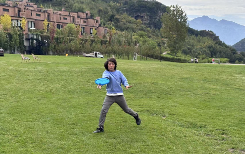

Frisbee
About frisbee
Ultimate frisbee is a team sport played with a flying disc. Players pass the disc to teammates and score by catching it in the opposing end zone. It combines running, throwing and teamwork, with an emphasis on fair play.
My journey
I started playing frisbee in sixth grade and have been playing for three years.
Competition experience
In 2023, I joined my school team at a frisbee open tournament and we finished in eighth place. This is the only tournament I have competed in so far.
